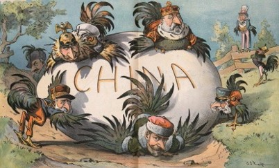
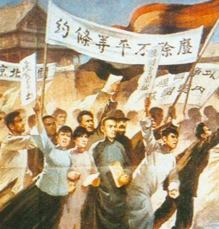
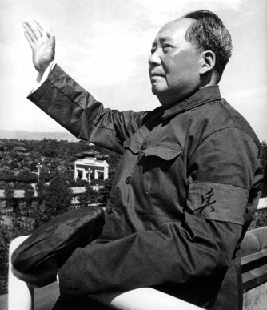

Preludio a la Revolución
A pesar de los grandes avances tecnológicos y culturales que China experimentó durante su periodo imperial, la región asiática se vio totalmente estancada durante el siglo XIX, también conocido como “el Siglo de la humillación”. Este periodo se caracterizó por la pérdida de una gran parte del territorio chino por parte de manos extranjeras. Esta situación, junto con la poca credibilidad y autoridad moral que la dinastía Qing poseía, generó un gran descontento popular, el cual se transformó en una gran lucha para reformar el orden político en China.
Es así como en 1905, se formó el Tongmenghui (同盟会; en español, Alianza revolucionaria) bajo el liderazgo de Sun Yatsen, el cual propuso un programa llamado “los tres principios del pueblo” con 3 pilares: el nacionalismo, la democracia y el bienestar social. El primero tenía el propósito de acabar con el dominio extranjero; el segundo, acabar con la dinastía Manchú y construir una república china, y el último, redistribuir la tierra
La Alianza revolucionaria realizó varias rebeliones contra el gobierno y fue en 1911 cuando se produjo la revolución de Xinhai, la cual en 6 semanas contaba con 15 provincias que habían declarado su independencia. Ante ello, el gobierno envió al general Yuan Shikai para cesar la revolución; sin embargo, él realizó el papel de intermediario, en vez de reprimir a los rebeldes. Más tarde, Sun Yatsen se volvería presidente provisional; no obstante, cedió su cargo al general Yuan con la condición que el emperador Puyi abdique. Fue así como, en febrero de 1912, el último emperador Qing abdica y se acaba con más de dos mil años de control imperial en China. El 10 de marzo de 1912, el general Yuan se volvió presidente de China. Durante su gobierno se celebró elecciones para la cámara del senado y la cámara de representantes; sin embargo, se debe tener en cuenta que solo un 5% de la población calificaba para ejercer el derecho de sufragio.
Durante este periodo, el Tongmenghui se fusionó con otros partidos para formar el Kuomintang (国民党; en español, partido nacionalista) con el fin de poder acumular más poder y tener un frente nacionalista más fuerte. De esta manera, durante el gobierno de Yuan Shikai, el KMT consiguió la mayoría en ambas cámaras parlamentarias, la cual desempeñó un papel de oposición al gobierno, especialmente, porque Yuan comenzó a tomar decisiones sin previa consulta parlamentaria. Fue en este periodo que Yuan recibió 25 millones de libras esterlinas, otorgado por parte de consorcios de financiadores británicos, franceses y alemanes con el objetivo de mejorar la organización del sistema administrativo; sin embargo, se considera que el verdadero motivo era suprimir la oposición y construir una república financiada por banqueros extranjeros. Este suceso, conocido como “el Préstamo de reorganización”, generó una revuelta por parte del KMT; sin embargo, hubo una fuerte represión por parte del gobierno.
Para 1914, Yuan Shikai se autonombra presidente vitalicio y convierte su puesto hereditario. Además, expulsa al KMT del parlamento para luego disolverlo. Posteriormente se da el inicio a la segunda guerra mundial y, en 1915, el gobierno japonés envió a China 21 exigencias, entre las cuales figuraba el traspase de los derechos de las concesiones alemanas en china al país nipón, el control de los puertos y los ferrocarriles de Manchuria y la condición de que únicamente se pudiera entregar los puertos a Japón. Yuan cedió ante varios de los pedidos japoneses convirtiendo a China en una dependencia japonesa. Yuan planearía convertirse emperador de China, lo cual generaría un gran malestar entre la población, el cual fue rápidamente calmado con su muerte debido a un fallo en el riñón.
Con la muerte de Yuan Shikai se da inicio al periodo de los señores de la guerra, el cual se caracterizó por el caos político debido a la división del país entre grupos militares convirtiendo al gobierno de Pekín en un ornamento. Varias guerras se llevaron a cabo y el campo experimentó el incremento de la violencia por parte de vándalos. Este contexto de desorden permitió cierta libertad intelectual y de expresión, lo cual generó cambios en la sociedad china y en las siguientes protestas.
En 1920, comienza la formación del partido comunista chino (PCCh) por personas interesadas por el marxismo, entre los cuales se encontraba Mao Zedong. Luego de esto, el KMT forma una alianza con el PCCh para poder librar a China de todo poder extranjero; sin embargo, ante la muerte del líder del KMT, Sun Yatsen, Chiang Kaishek toma un papel mas importante en el partido. El odio hacia el comunismo por parte de Chiang generó mucha tensión con el PCCh y, en 1927, este promueve una purga de los miembros del PPCh en Shanghái. Un grupo que no apoyaba las purgas generó una división en el KMT; sin embargo, pronto se reunificaron y, bajo el mando de Chiang, se establece Nanjing como la capital y se da el inicio de la década de Nanjing.
Durante la década de Nanjing, el KMT controla gran parte del antiguo imperio chino, sin contar las regiones de Mongolia, Tibet, Xinjiang y Manchuria. Durante este periodo, la resistencia ante el afán expansionista fue mínima, pues la política de Chiang Kaishek se basaba en la pacificación interna (cacería de comunistas) antes de la resistencia a fuerzas externas. Debido a la persecución hacia todo aquel que sea comunista, Mao y otros miles de simpatizantes se asentaron en las montañas donde luego sentarían las bases para la creación del Ejército rojo. Mao consiguió la simpatía del campo, pues el PCCh se mostraba como una solución ante las hambrunas y la falta de una reforma agraria. Fue en 1931, que los comunistas proclaman una república soviética china bajo el liderazgo de Mao Zedong, lo cual incrementa la persecución por parte del ejército de Chiang y, en 1933, envía un ejército de medio millón de soldados con 400 aviones. En 1944, el ejercito nacionalista fuerza al partido comunista a retirarse, evento que se conoce como “la larga Marcha”. Esto fue un viaje hacia el noroeste dirigido por Mao y Zhou Enlai, el cual duró 370 días y fue de gran ayuda pues el partido se liberó de la influencia soviética y se fortaleció en el la disciplina y lealtad hacia Mao como su líder.
Posteriormente, se da inicio a la guerra sino-japonesa. Cabe mencionar que, desde 1931, se habían producido varios incidentes entre China y Japón como el incidente del puente Marcopolo en 1937; sin embargo, no fue hasta el secuestro de Chiang Kaishek por parte del señor de Manchuria, en el cual se cambió la política militar y se decidió hacer un alto al fuego contra con los comunistas para hacer frente a los japoneses. Durante este conflicto con Japón, el KMT sufrió varias pérdidas, pues casi la mayoría de las zonas costeras fueron tomadas, lo cual obligó a cambiar el lugar de gobierno a Chongqing. Luego de ello, se retomaron las hostilidades con el ejercito rojo; no obstante, esta vez el ejército del KMT se encontraba desmoralizado y debilitado debido a una gran hambruna en las provincias centrales de China. Ante todo esto, el ataque con bombas atómicas en Hiroshima y Nagasaki finalizó las hostilidades entre China y Japón, mas no el enfrentamiento entre los nacionalistas y comunistas. La guerra civil china continúa; sin embargo, esta vez con un ejército rojo mucho más fortalecido que su rival nacionalista.
En 1945, Mao Zedong proclama la república china en la plaza de Tiannamen. Para noviembre de 1946, los comunistas ya controlaban la totalidad de Manchuria y, en 1949, Nanjing, Shanghái y Guangzhou ya se encontraban bajo el poder comunista. En diciembre de 1949, Chiang huye a la isla de Taipéi junto con dos millones de seguidores de KMT.